Dialogue second
Entre le Pilory et Portenoire, sur la prise de Besançon par les François
Click a manuscript image to enlarge it. Cliquez sur une image du manuscrit pour l’agrandir.
Hover over, focus, or tap a dotted passage to display its critical note. P = 1668 printed witness. Survolez, sélectionnez au clavier ou touchez un passage en pointillé pour afficher sa note critique. P = témoin imprimé de 1668.
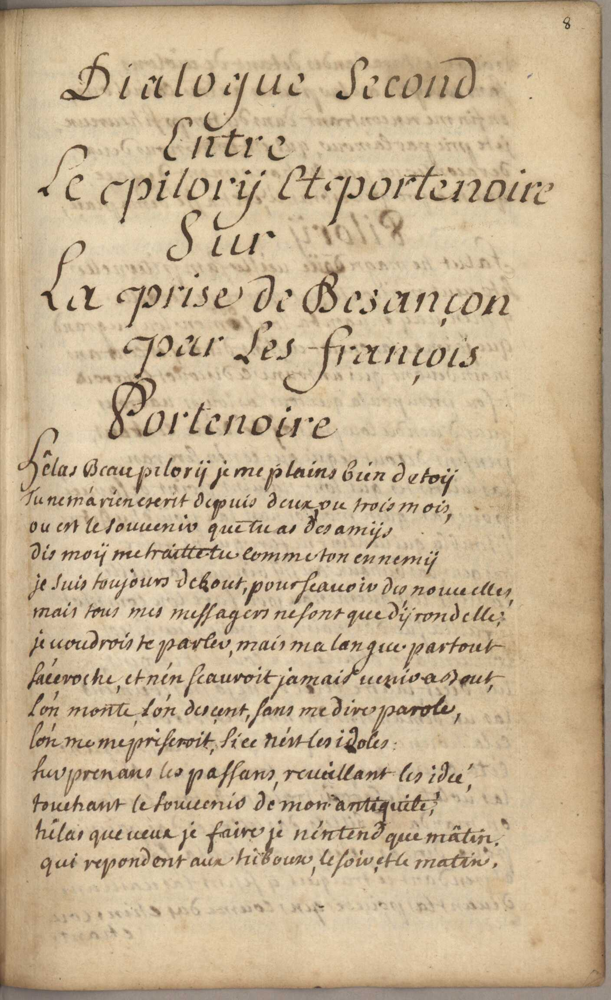
Dialogue Second entre le pilorÿ et portenoire sur la prise de Besançon par les François
Portenoire
Hêlas beau pilorÿ je me plains bien de toÿ
Tu ne m'a rien escrit depuis deux, ou trois mois,
ou est le souuenir que tu as des amÿs
dis moÿ me traitte tu comme ton ennemÿ
je suis toujours debout, pour scauoir des nouuelles,
mais tous mes messagers ne sont que dÿrondelle;
je uoudrois te parler, mais ma langue partout
s'accroche, et n'en scauroit jamais venir a bout,
l'on monte l'on desçent, sans me dire parole,
l'on me mepriseroit,si ce n'est les idoles
surprenans les passans, reueillant les idée,
touchant le souuenir de mon antiquité,
hélas que ueux je faire je n'entend que mâtin
qui repondent aux hiboux, le soir et le matin
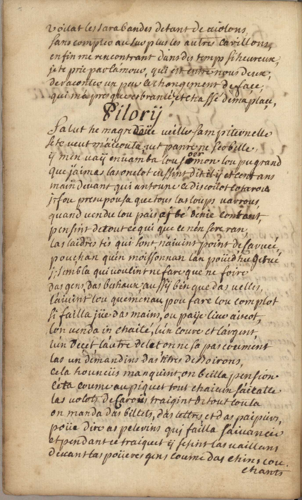
Uoilat les sarabandes de tant de uiolons,
sans conter au surplus les autres carillons,
enfin me rencontrant dans des temps si heureux,
je te prie par l'amour, qui est entre nous deux,
de raconter un peu ce changement de façe;
qui m'a presque esbranlé, et chassé de ma plaçe.
Pilorÿ
Salut he magredoüe ueille sampiternelle
Se te ueut m'aicouta; uet panre ne scobelle,
ÿ men uaÿ enuamba lou soermon lou pu grand
que j'aimas las onclot eussint dit il-ÿ et cent ans
main deuant qui antoune ce discoüot cotaroux
ji fou presupousa que tous las loups uarrous,
quand uendu lou pais ai bé denie contant,
pensint de tout ce qui que ce n'en sere ran;
las laidres tés qui sont naiuint point de saruee,
pouchan qu'en moissonnan l'an poüed'hu getué
ji sembla qui uoulint ne fare que ne foire
das gens, das bestiaux, aussÿ ben que das uelles,
l'aiuint lou queménau34. queménau : rendez vous P pou fare lou complot
si failla jüe das mains, ou paije lieu aiscot,
lon uenda in chaité, bin l'un coure et l'argent,
l'un deçet, l'autre delet on ne sa pas coument
las un demandins das titres de boirons,
cela houneür manquint, on bailla pension.
C'eta coume au piquet tout chaicun s'aicatte
las uolots de Caroüs traigint de tout couta
on manda das billets, das lettres et das paipiers,
poü dire as pelerins qui failla s'aiuancie
et pendant ce traiquet ÿ se tint las uaillans
deuant tas poüeres gens coume das chins couchants.
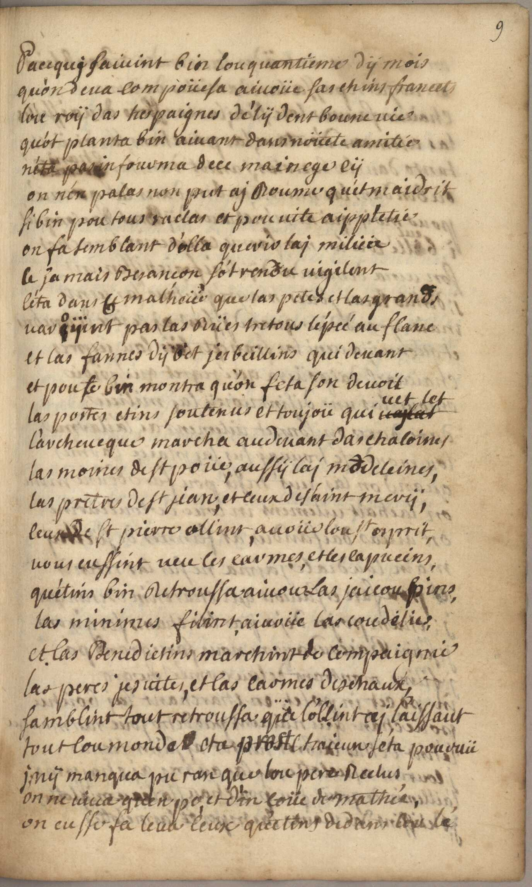
Pacequi46. Pacequi : Baste P saiuint bin lou quantieme dÿ mois
qu'on deua compoüesa aiuoüe sas chins francets47. sas chins francets : le roi français P
lou roÿ das hespaignes dé lÿ dent boune uie
qu'ot planta bin aiuant dans noüete amitié
n'éta pas infourma dece mainege cÿ
on n'en palas non put aj boume Roume qu'et Maidrit
si bin pour tous raclas et pou uite aippletie
on fa semblant d'olla querir lai milicie
ce jamais Besancon sot rendu uigilent
c'eta dans ce malheü que las petes et las grands,
uaroÿent pas las rües tretous l'épée au flanc
et las fannes dÿ bet, jerbeillins56. jerbeillins : chaibeillin P qui deuant
et pour te bin montra qu'on fesa son deuoit
las portes etins soutenus et toujoü qui uet let
larcheueque marcha audeuant das chaloines
las moines de st poüe, aussÿ laj m[a]ddeleines,
las pretres de st jean, et ceux de saint merÿ,
ceux de st pierre ollint auoüe lou st esprit,
uous eussint ueu les carmes, et les capucins,
qu'etins bin retroussa aiuoue las jaicoubins40–41. capucins … jaicoubins : inv. P,
las minimes filint, aiuoüe las coudelier,
et las benedictins marchint de compaignie
las peres jesuites, et las carmes deschaux,
samblint tout retroussa que l'ollint ai laissaut
tout lou monde eta prost chaicun s'eta pouruü
i nÿ manqua pu ran que lou pere reclus
on ne uiua quen po, et d'in coüe de mathié,
on eusse fa leua ceux qu'etins dedans lou lé
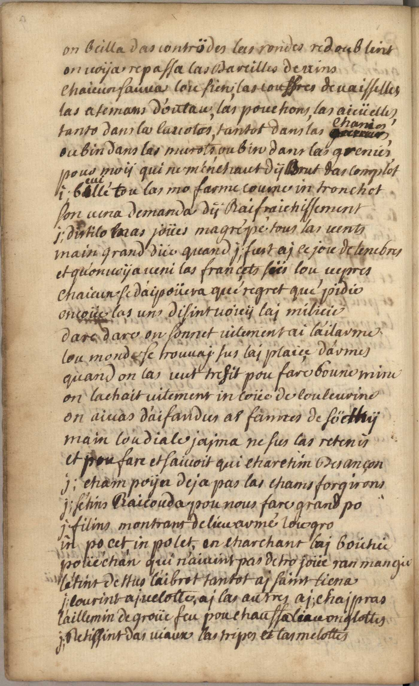
on beilla das contrödes las rondes redoublint
on uoÿa repassa las bareilles de uins
chaicun sauua lou sien, las couffres de uaisselles,
las asemans d'outau, las pouchons, las aicüelles,
tanto dans la cauotes, tant dans las chanies,
ou bin dans las murots, ou bin dans las grenier78. grenier : soulier P
pour moÿ qui ne m'enchaut d'ÿ brut das complot,
i beuillé tou las mo farme coume in tronchot
s'on uena demanda dÿ raifraichissement
ji distilo mas joües magré pé tous las uents
main grand düe grand ji fust ai ce jou de tenebres
et qu'on uoÿa ueni las françets sür lou uepres
chaicun se d'aipoüera qué regret qué pidie
encoüe las uns difint uoicÿ laj milicie
dare dare on sonnet uitement ai l'ailarme
lou monde se trouuaj sur lai plaiçe d'armes
quand on las uut tresit pou fare boune mine
on lachait uitement un coüe de couleurine
on aiuas d'aifandus as fammes de söethÿ
main lou diale jaima ne sus las retenir
et pou fare et saiuoit qui charchin Besançon
ji champoÿa deja pas la chams forgirons
ji s'etins raicouda pou nous fare grand po
ji filins montrant de lieu armé lou gro
in po cet in polet en charchant lai boichie
poüechan qui n'aiuint pas de trop joüe ran mangie
l'etint dessus l'aibrot tantot ai saint liena
ji courint ai uelotte, ai las autres ai chaipras
l'aillemin de groüe feu pou chauffa lieu onglottes
ji retissint das uiaux las tripes et las melottes
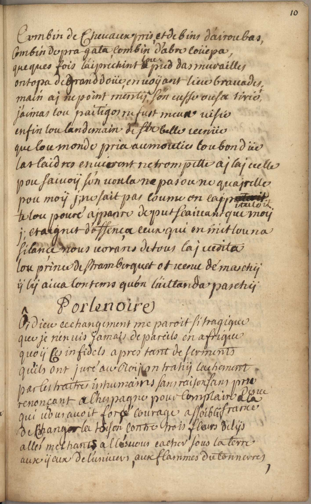
combin de cheuaux pris et de bins d'airoubas,
combin de pra gata, combin d'abre coüepas,
queques fois l'aiprechint lou pied das murailles
ontopa de grand doüe, en uoyant lieu bravades,
main ai ne point mentir, s'on eusse ousa tirie
j'aimas lou paitigos108. paitigos : belle cible P ne fust meux uisie
enfin lou landemain de ste [cette] belle uenüe
que lou monde pria au mouties lou bon düe
las laidres enuierent ne trompette ai lai uelle
pou saiuoÿ s'on uoula ne pas ou ne quairelle
pou moÿ ji ne sait pas coume on cappituloit
te lou pouré aipanre de put scaiuant que moÿ
ji craignet d'offença ceux qui on mit lou na
silançe nous uorans de tous lai uerita
lou prince de stramberquet ot uenu dé marchÿ
ÿ lÿ aiua lontemps qu'on l'aittanda paschÿ115–119 om. P
Portenoire
Ôi dieu ce changement me paroit si tragique115–119 om. P
que je n'en uis jamais de pareils en afrique
quoÿ ces infidels apres tant de serments
qu'ils ont juré au roÿ on trahÿ lachement
par les traitres inhumains sans raison sans pru[-dence]
renonçant a l'hespagne pour complaire a la france
qui uous auoit forçé courage affoibli
de changer la toison contre trois fleurs de lÿs
allés mechants allés uous cacher sous la terre
aux ÿeux de l'univers, aux flammes du tonnerres,
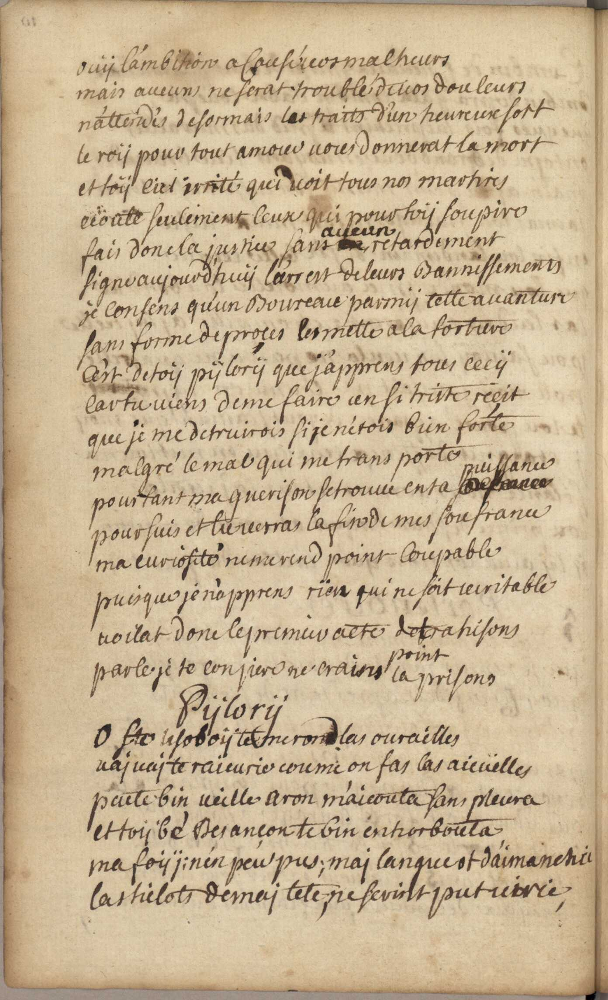
ouÿ l'ambition a causé uos malheurs
mais aucuns ne serat troublé de uos douleurs
n'attendés desormais les traits d'un heureux sort
le roÿ pour tout amour uous donnerat la mort
et toÿ ciel irrité qui uoit tous nos martires
ecoute seulement ceux qui pour toÿ soupire
fais donc la justice sans aucun retardement
signe aujourd'huÿ l'arrest de leurs bannissements
je consens qu'un boureau parmÿ cette auanture
sans forme de proçes les mette a la torture
c'est de toÿ pÿlorÿ que j'apprens tous cecÿ
car tu viens de me faire un si triste reçit
que je me detruirois si je n'étois bin forte
malgré le mal qui me transporte
pourtant ma guerison se trouue en ta puissance
poursuis et tu uerra la fin de mes soufrance
ma curiosité ne me rend point coupable
puisque je n'apprens rïen qui ne soit ueritable
uoilat donc le premier acte de trahisons
parle je te conjure ne crains point la prisons
Pÿlorÿ
O Ste lisoboÿ te me rond las ourailles
uaj uaj te raicurier coume on fas las aicüelles
peute bin ueile aron m'aicouta sans pleura
et toÿ bé Besançon te bin enhorbouta
ma foÿ ji n'en peu pus; mai langue153. langue : tété P ot d'aimanchie153. d’aimanchie : daimagie P
las hilots de mai tete, ne seuint put uirie154. La ticlot de met langue ne serin pu virie P
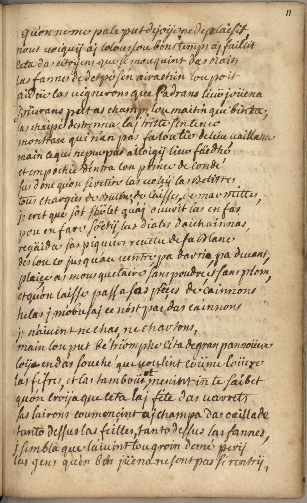
qu'on ne me pale put de joÿe ne de plaisit
nous uoiquÿ ai lolous, lou bons temps aj faillit
ceta das citoÿens que se mouquint das raits
las fannes de detpée s'en airachin lou poit
aidüe las uignerons que padrans lieü joüena
ji n'ierans pat as champs lou maitin que bin ta;
las chaipé des trenna lai tritte sentence
montran qui n'an pas fa lou tie de lieu uaillance
main ce qui repue pas ailoigÿ lieu faëdhé
et empochie d'entra lou prince de condé
sus donc qu'on se retire las uoicÿ las belitres
tous chargier de butin, de caisses, de marmittes,
ji cret que sot shölet167. shölet : Calvin P qu'aj ouurit las enfas
pou en fare soëtÿ, las diales daichainnas,
regäida sas piquiers reuetu de sa blanc
des lou co jusqu'au uentre pa darrie, pa deuant,
plaiçe as mousquetaire sans poudre et sans plom,
et qu'on laisse passa sas pêçes de cainnons
helas ji m'obusaj ce n'ost par das cainnons
ji n'aiuint ne char, ne charton,
main lou put bé triomphe c'éta de grand pannoüere
loÿe en das souche qui uoulint coüme loüere
las fifres, et las tamboürot menint in te saibet
qu'on croÿa que ceta lai féte das uarrets
las lairons coumencint ai champa das oeillade
tanto dessus las feilles, tanto dessus las fannes,
i sembla que l'aiuint tou groin de mé perÿ
las gens qu'en bin jüena ne sont pas si rentrÿ.
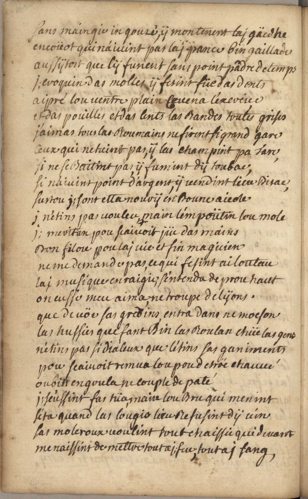
sans maingie in gouré, ÿ montenent lai gäidhe
encoüot qui n'aiuint pas lai pance bin gaillade
aussÿtost que lÿ furent sans point pädre de temps
ji euoquin das molles ÿ fesint füe das dents
aipré lou uentre plain ceuena l'exercice
et das pouilles et das cents las bandes toutes grises
j'aimas tous las roumains ne firent si grand gare
ceux qui ne tuint pas, ÿ las champint pa tare,
si ne se baitint pas ÿ fumint dÿ toubac,
si n'aiuint point d'argent, ÿ uendint lieu bisac,
surtou ji sont etta nourÿ en boune aicole
i n'étins pas uouleu main l'empoütin lou mole
ji meritan pou scaiuoit jüe das mains
bon filou pou lai uie et fin magicien
ne me demande pas, ce qui fesint ailoutau
lai musique enraigie, s'entenda de prou haut
on eusse meu aima ne troupe de lÿons.
que de uöe sas gredins entra dans ne moeson
las hussie que fant bin las roulan chüe las gens
n'etins pas si dialeux que l'etins sas ganiments
pou scaiuoit remua lou pou de tröe et chauuéante 203 add. P : Aittaichin et lieu cou da grou loupin de cuiure / Men iaima i nen pu aideuci sa polot / I failla teu la ioüot la mettre au cheuolot.
ou bin engoula ne couple de paté
ji s'eussint fas tua, main lou bru qui menint
s'eta quand las lougis lieu refusint dÿ uin
sas moleroux uoulint tout chaissie qui deuant
menaissint de mettre tout ai feu, tout ai sang,
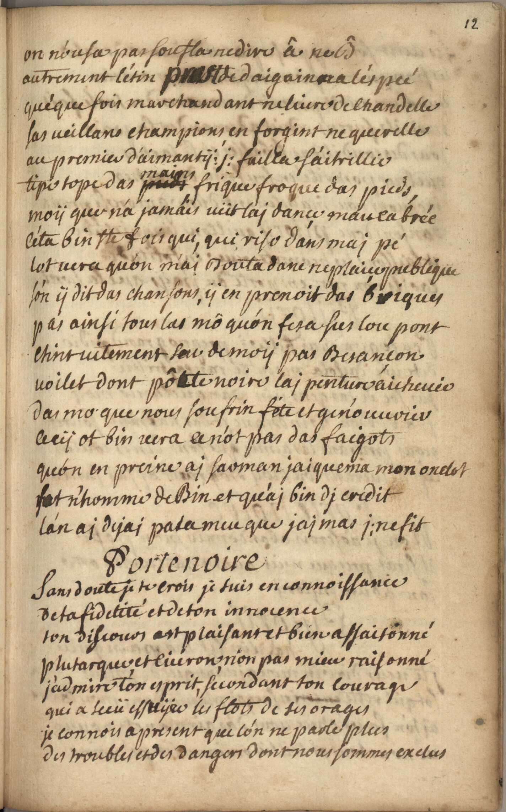
on n'ousa pas soufla redire â ne bé
autrement l'etin prost daigainna l'espée
que'que fois marchandant ne liure de chandelle
sas ueillans champions en forgint ne querelle
au premier d'aimantÿ ji failla s'aitrillie
tipe tope das mains frique froque das pieds,
moÿ que n'a jamais uüt laj dançe maucabrée
c'éta bin ste fois qui, qui riso dans mai pé
lot uera qu'on m'ai bouta danc ne plaiçe publique
s'on ÿ dit das chansons, ÿ en prenoit das briques
pas ainsi tous las mô qu'on fesa sus lou pont
etint uitement scu de moÿ pas besançon
uoilet dont pôtte noire laj penture aicheuée
das mo que nous soufrin fete et genouurier
cecÿ ot bin uera ce n'ot pas das faigots
qu'on en preine ai sarman jaiquema mon onclot
fut n'homme de bin et qu'ai bin di credit
l'an ai dejai pala meu que jaj jaimas ji ne fit
Porte noire
Sans doute je te crois je suis en connoissance
de ta fidelité et de ton innocence
ton discours est plaisant et bien assaisonné
plutarque et ciceron non pas mieu raisonné
j'admire ton esprit, secondant ton courage
qui a scüe essuÿee les flots de ses orages
je connois a present que l'on ne parle plus
des troubles et des dangers dont nous sommes exclus
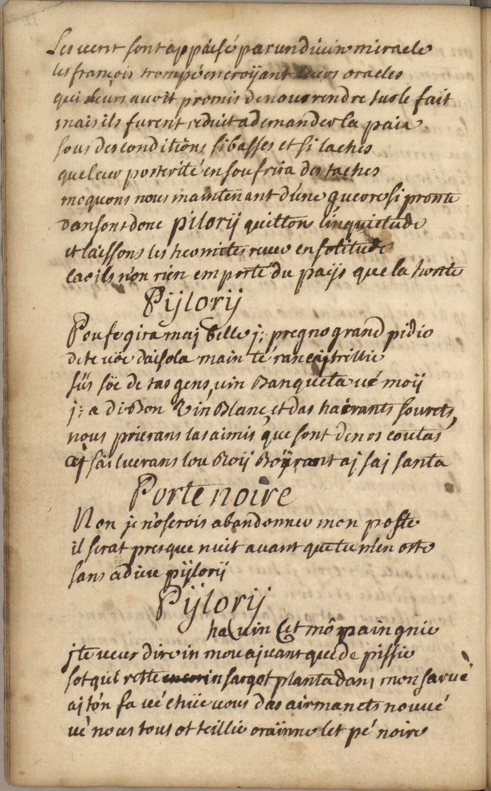
les uent sont appaisé par un diuin miracle
les françois trompé en croÿant leurs oracles
qui leurs auoit promis de nous rendre sus le fait
mais ils furent reduit a demander la paix
sous des conditions si basses et si laches
que leur posterité en soufrira de taches
moquons nous maintenant d'une guerre si pronte
dansont donc pilorÿ quittons l'inquietude
et laissons les hermites ruer en solitude
las ils n'on rien emporte du paÿs que la honte244 om. P
Pÿlorÿ
Pou se gira mai belle ji pregno grand pidio
de te uöe daisola main te rancajtreillie
süs söe de tas gens, uin banqueta ué moÿ
ji a di bon uin blanc et das hairants fourets,
nous prierans las aimis que sont de nos coutas
ai sailuerans lou roy boÿrant ai sai sante
Porte noire
Non je n'oserois abandonner mon poste
il serat presque nuit auant que tu m'en oste
sans adieu pÿlorÿ
Pÿlorÿ
ha uin cet mô paingnie
j te ueux dire in mou aiuans que de pissie
sot qui reste in sargot planta dans mon sarue !
ai t'on fa ue chüe uous das airmanets nouué
ué nous tous ot teillie craïnne let pé noire
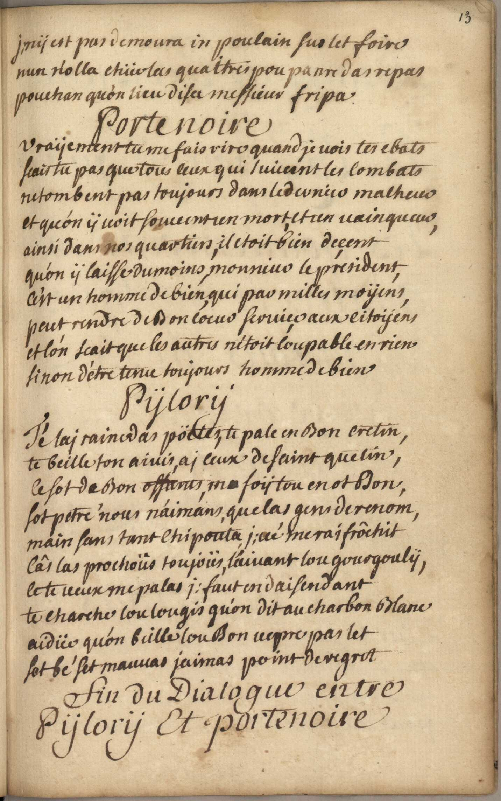
ji nÿ est pas demoura in poulain sus let foire
nun n'olla chüe las quattres pou panre das repas
pouchan qu'on lieu disa messieur fripa
Porte noire
Uraÿement tu me fais rire quand je uois tes ebats
scais tu pas que tous ceux qui suiuent les combats
ne tombent pas toujours dans le dernier malheur
et qu'on ÿ uoit soueuent un mort et un uainqueur,
ainsi dans nos quartiers, il etoit bien deçent
qu'on ÿ laisse du moins, monsieur le président,
c'est un homme de bien, qui par milles moÿens,
peut rendre de bon coeur seruiçe aux citoÿens
et l'on scait que les autres n'étoit coupable en rien
sinon d'être tenu toujours homme de bien
Pÿlorÿ
Té lai raine das pöetes, te pale en bon cretin,
te beille ton aiuis, ai ceux de saint quetin,
ce sot de bon offans, ma foÿ tou en ot bon,
sot petre nous n'aimans que las gens de renom,
main sans tant chipouta, ji ué me raifrôchit
câr las prochoüs toujoüs l'aiuant lou gourgoulÿ,
ce te ueux me palas ii faut en daisendant
te charche lou lougis qu'on dit au charbon blanc
aidieu qu'on beille lou bon uepre pas let
sot bé set mauuas jaimas point de regret
Fin du dialogue entre Pÿlorÿ et Porte Noire